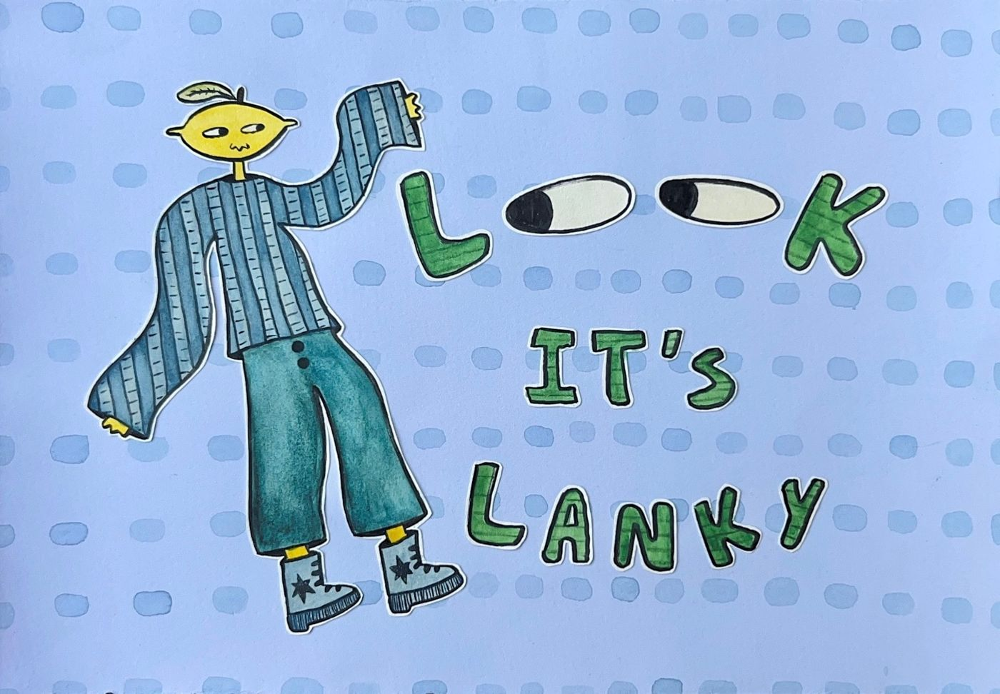
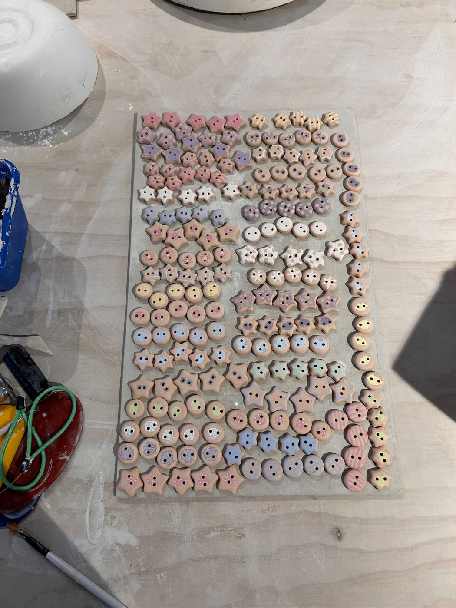
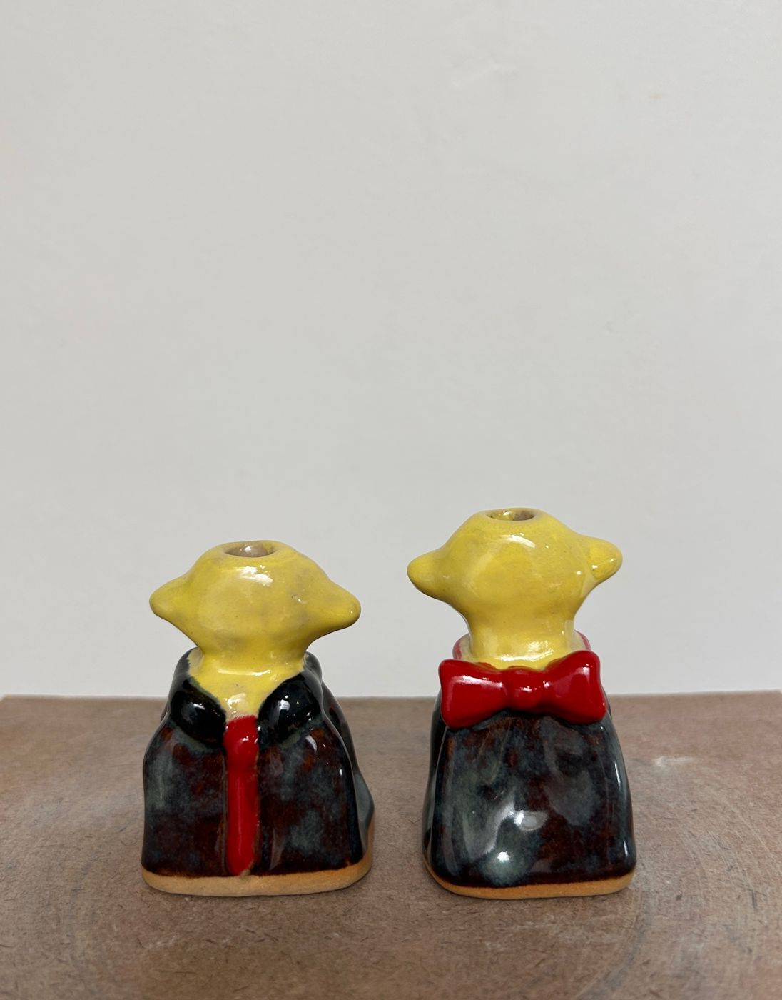
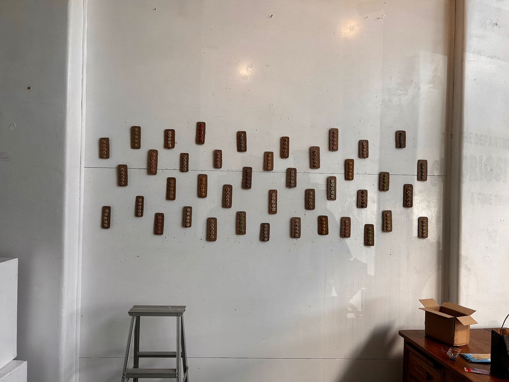

Look it's Lanky.
As her first exhibit after graduating Jodi was eager to tell everyone ' Look it's Lanky!'
She created a collection of buttons and wee vases that she felt expressed the joy she has in the bright parts of our world. The display was for sale at the Department of Curiosities in Napier and encouraged others to add a little Lanky to their lives.
The love for her buttons showed Jodi that it's often the things as simple as a button that bring immense joy. She continues to look for other things that she can create that ignite creativity in others.



